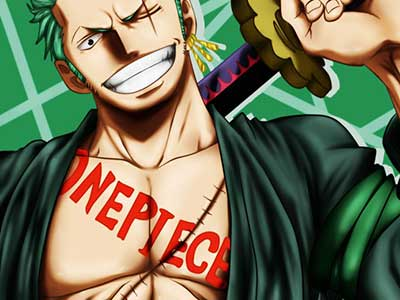
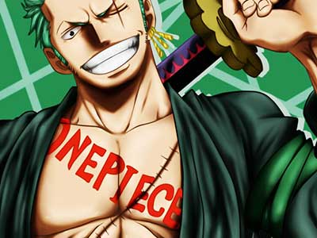

诺诺诺亚·索隆
我要成为世界第一的大剑豪！！~~ 可是 ，团队精神到底是什么啊？ 互相帮助互相袒护就算是吗 ？也有人这么认为吧 ！我是认为那根本只是唬人 ！应该是每个人抱着必死的决心做自己的事！” 我做好自己的部分了，接下来轮到你了，做不好的话我就揍扁你！“要有这种决心才算是起码的团队精神吧！ 所以从这点考虑的话 ，就算伙伴都是特例独行的人也没什么大不了的 ！我是这么想的。
我要成为世界第一的大剑豪！！~~ 可是 ，团队精神到底是什么啊？ 互相帮助互相袒护就算是吗 ？也有人这么认为吧 ！我是认为那根本只是唬人 ！应该是每个人抱着必死的决心做自己的事！” 我做好自己的部分了，接下来轮到你了，做不好的话我就揍扁你！“要有这种决心才算是起码的团队精神吧！ 所以从这点考虑的话 ，就算伙伴都是特例独行的人也没什么大不了的 ！我是这么想的。
别过来，路飞，你应该很明白，你和我都是海贼，应该都在大海上随心所欲地驰骋过，我有我的冒险，我有我的伙伴，你没理由干涉我的事情，像你这样的胆小鬼还要来救我，你觉得我会允许吗？没有比这更耻辱的事了，快回去，路飞。为什么要来？
路飞，你一定要成为海贼王！
路飞，不能看见你成为海贼王的那刻，真是太遗憾了 …… - - 不该贴这段的，作死 T_T